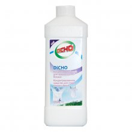
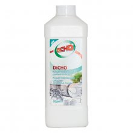
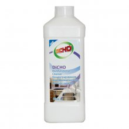
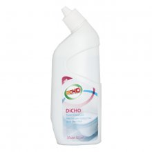

Средства по уходу за домом «Тяньши»Атмосфера чистоты в доме способна снять усталость после тяжелого трудового дня. А средства по уходу за домом серии DiCHO помогут вам справиться с хлопотами по хозяйству легко и непринужденно. Нельзя недооценивать такие очевидные преимущества серии моющих средств DiCHO, как: В данном разделе представлен полный ассортимент концентрированных чистящих средств для очистки и мытья различных поверхностей на кухне, в туалете и ванной, а также во всем доме. Наш ассортимент удовлетворит вкус даже самого взыскательного покупателя. За счет натуральных компонентов все средства оказывают более бережное воздействие и на предметы, и на руки, и на окружающую среду. Предлагаем вашему вниманию: |
|

Концентрированное средство для стирки нижнего белья DiCHOСредство предназначено для ручной стирки цветного и белого белья из деликатных тканей. Преимущества: Преимущества: Состав: Внимание! Не рекомендуется использовать одновременно с другими средствами. Не наносить на сухую одежду. При попадании средства в глаза немедленно промыть большим количеством воды. Хранить в недоступном для детей месте. Объем: |
|

Концентрированное средство для мытья посуды DiCHOСредство предназначено для мытья стеклянной, фарфоровой и металлической посуды, керамики и хрусталя, кухонных принадлежностей, столовых приборов, изделий из пластмасс. Преимущества: Состав: Внимание! Хранить отдельно от пищевых продуктов, в недоступном для детей месте. В случае попадания в глаза немедленно промыть проточной водой. Объем: |
|

Концентрированное многофункциональное моющее средство DiCHOИспользуется для мытья полов, кафеля, ванн и других бытовых поверхностей и предметов, за исключением контактирующих с пищевыми продуктами, а также для ручной стирки одежды. Преимущества: Состав: Внимание! Хранить отдельно от пищевых продуктов, в недоступном для детей месте. В случае попадания в глаза немедленно промыть большим количеством воды. Объем: |
|

Чистящее средство для унитаза DiCHOСредство используется для чистки унитазов. Преимущества: Состав: Внимание! Беречь от детей! Избегать смешивания с отбеливателем и другими химическими средствами. Избегать попадания на кожу и глаза (при попадании немедленно промыть водой). Не использовать средство на металлических и некерамических поверхностях. Объем: |